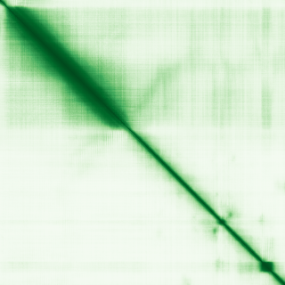

type: protein-evaluation gene: "CCDC62" date: 2026-05-31 tags: [protein-scout, nucleus-cytoplasm, evaluation] status: scored ---
CCDC62 核-胞质蛋白
UniProt: Q6P9F0. Nuclear receptor coactivator (ESR1/ESR2).
| 维度 | 得分 | 权重 | 加权 | 摘要 |
|---|---|---|---|---|
| 核定位特异性 | 8/10 | ×4 | 32.0 | UniProt Nucleus + Cytoplasm ECO:0000269; GO nucleus IDA |
| 蛋白大小 | 5/10 | ×1 | 5.0 | 684 aa |
| 研究新颖性 | 8/10 | ×5 | 50.0 | PubMed strict=21, broad=36 |
| 三维结构 | 5/10 | ×3 | 15.0 | pLDDT 64.4 |
| 调控结构域 | 6/10 | ×2 | 12.0 | Nuclear receptor coactivator |
| PPI 网络 | 5/10 | ×3 | 15.0 | STRING/IntAct: ESR2 core partner |
| 加权总分 | 119/180********** | |||
| 互证加分 | +1.5 | Nucleus IDA + coactivator function | ||
| 归一化总分 (÷1.83) | 65.0/100********** |
核定位证据: UniProt Nucleus + Cytoplasm + Acrosome ECO:0000269. GO nucleus IDA:ParkinsonsUK-UCL. Nuclear receptor coactivator -- functional confirmation of nuclear localization.
HPA IF 状态: IF thumbnail only — HPA 暂无 IF 原图，仅获取到 60x60 缩略图，不能作为可靠定位证据。核定位基于 UniProt + GO-CC。

PAE 图像已获取。结构判断基于 AlphaFold pLDDT 统计。
PPI 网络（三源综合）
| Partner | Source | Score/Evidence | Relevance |
|---|---|---|---|
| HIP1R | STRING | score=0.873, exp=0 | Textmining only |
| ESR2 | STRING | score=0.706, exp=0.292 | Estrogen receptor beta; also UniProt (6 experiments) + IntAct (two hybrid) |
| CCND1 | STRING | score=0.598, exp=0.292 | Cyclin D1; co-expression |
| SDHA | IntAct | cross-linking | Succinate dehydrogenase |
| PLEC | IntAct | cross-linking | Plectin |
| CFTR | IntAct | pull down | Cystic fibrosis transporter |
IntAct 数据: ESR2 (two hybrid, ChIP), SDHA (cross-linking), PLEC (cross-linking), CFTR (pull down) 。UniProt 记载 ESR2（6 个实验）。无 BioGrid 补充数据。
Strong nuclear receptor coactivator.
关键文献
| PMID | 标题 |
|---|---|
| 22507762 | Psychotropic drug effects on gene transcriptomics relevant to Parkinson's disease. |
| 28339613 | A nonsense mutation in Ccdc62 gene is responsible for spermiogenesis defects and male infertility in |
| 19126643 | CCDC62/ERAP75 functions as a coactivator to enhance estrogen receptor beta-mediated transactivation |
| 36047070 | Globozoospermia: A Case Report and Systematic Review of Literature. |
| 24335092 | CCDC62 variant rs12817488 is associated with the risk of Parkinson's disease in a Han Chinese popula |
PAE 图像暂无数据（未生成本地图片或未可靠获取），结构判断基于AlphaFold pLDDT统计。